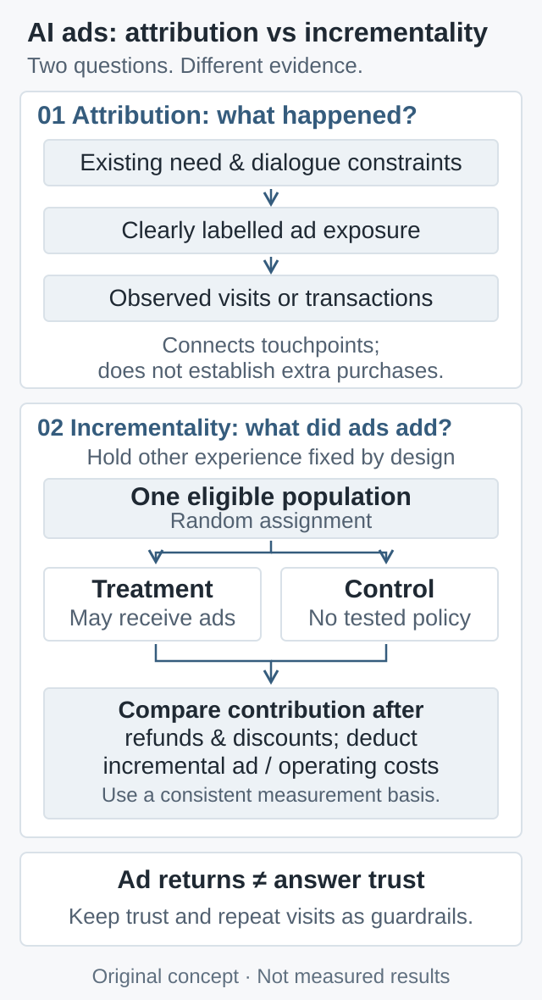

归因窗口用于解释平台报表，实验观察期用于比较两组结果，两者应分别预先定义。购买要覆盖商家的可观测渠道并去重：用户从付费搜索迁到 AI 广告，不等于新增订单；从线下迁到线上也一样。对照期应覆盖正常购买延迟，退款需要成熟期，并报告效应区间。不能只留下有点击、授权回传或成功匹配身份的用户再比较，那会破坏原始随机化。
What Comes Next for AI Advertising: Intent, Attribution, and Incremental Value
Conversation may improve ad matching, but high-intent users may have purchased anyway. OpenAI’s visual-ad test motivates an analysis of incremental profit, trust, checkout control, and the different constraints facing Google and Baidu.
If AI understands what someone wants to buy more accurately, does that necessarily make for a better advertising business? A counterfactual is missing: would the person have purchased without the ad? As a conversation approaches a decision, matching may improve while the proportion of people who would have bought anyway also rises. Both can be true.
On October 5, 2026, OpenAI announced a new visual ad format, with testing scheduled for later that month in the United States with an initial group of advertisers. Ads would appear during image generation and remain separate from the generated image. This was not a global launch announcement. Its accompanying measurement update expanded conversion-data and attribution partnerships while describing incrementality work as early-stage. Beyond adding another placement, the consequential question is how understanding intent becomes sustainable incremental value.
This article uses public materials verified through October 6, 2026. The economic model and experiment below are analytical proposals. No advertising experiment was run, and company case studies are not presented as results produced for this article.
1. Conversation improves retrieval specificity, not causal identification
Imagine a person looking for a dining table: a limited budget, young children at home, a narrow room, and delivery needed before the weekend. A keyword might retain only “dining table”; a conversation adds constraints on dimensions, safety, price, and fulfillment. With an accurate catalog, a system could first exclude unsuitable candidates and then explain the remaining choices, reducing wasted clicks that reveal a mismatch only afterward. This is a plausible mechanism, not a description of an advertising system implementation inspected for this article.
Understanding constraints still requires reliable product data. If a catalog omits dimensions, inventory, or delivery information, fluent generation cannot supply a real commercial commitment. A more persuasive explanation may instead increase the cost of a wrong recommendation. Retrieval should be evaluated through constraint satisfaction, coverage, and post-purchase returns, alongside clicks.
Yet a better-prepared buyer is not the same as a buyer induced to purchase by an ad. High-intent users are both more likely to enter the candidate audience and more likely to find the merchant themselves. Comparing people who saw an ad with people who did not mixes existing purchase propensity into the estimated effect. Richer context may improve matching and increase selection bias at the same time.
2. Define incremental contribution per eligible user
Take the advertiser’s perspective. Define one eligible population in advance and randomize before ad delivery. Let \(Z=1\) denote assignment to the advertising policy being evaluated and \(Z=0\) the control. Let \(Y\) indicate whether a user completes a qualifying purchase within a fixed observation period. With valid randomization, consistent measurement across arms, and no material interference between them:
This is the effect of assignment to the policy. Treatment users remain in the denominator even if they never receive an impression. It is not an effect per impression. Under the simplifying assumptions of at most one counted order per user and equal mean contribution per order \(m\) in both arms:
Here \(m\) is contribution per order after refunds, discounts, and variable product and fulfillment costs, but before the advertising and additional operating costs in the equation. \(c_{\mathrm{ad}}\) and \(c_{\mathrm{ops}}\) are the incremental between-arm differences in those two costs: calculate each arm’s mean using all randomized eligible users in that arm, then subtract. The units of \(m\) are currency per order; \(\Delta p\) corresponds to the expected incremental orders per user. Consequently, \(\Delta\pi\) is currency per user, not ROI or a gross-margin percentage.
If advertising changes repeat-order counts, basket size, discounts, or refund patterns, a constant \(m\) is no longer appropriate. Directly compare net contribution per user between the experimental arms instead. Nor should platform advertising revenue be substituted for advertiser benefit: a payment that is revenue to one party is a cost to the other.

Figure 1. Original conceptual diagram, not experimental data. Arrows describe mechanisms to test, not evidence that every stage already produces positive returns.
3. More complete feedback makes attribution and incrementality no less distinct
OpenAI’s measurement documentation distinguishes click-through and view-through attribution and supports a one-day view-through window. Reporting-window settings do not change its campaign optimization. Such reporting can capture purchases made after an impression without a click, but temporal sequence alone does not establish causation. A wider window can recover missed influence and include more purchases that would have happened anyway.
A testable protocol would freeze eligibility, the randomization unit, primary outcome, and observation period, then run the advertising policy and a control without that policy concurrently, retaining original assignments. Prespecify sample size and stopping rules rather than declaring success when an interim result becomes significant. If cross-device or geographic spillovers are substantial, choose an appropriate cluster-randomized design and disclose contamination and missing outcomes.
The attribution window explains platform reporting; the experimental observation period defines the comparison between arms. Prespecify them separately. Deduplicate purchases across the merchant’s observable channels: shifting a purchase from paid search to AI advertising does not create another order, nor does moving a purchase from offline to online. Allow for normal purchase delays and refund maturation, and report uncertainty intervals. Restricting the analysis after randomization to people who clicked, permitted conversion sharing, or matched an identity successfully would compromise the original randomized comparison.
4. The answer–advertisement boundary constrains information quality
OpenAI’s advertising principles commit to answers unaffected by ads, clear labeling and separation, conversation privacy, and not optimizing for time spent. These are public commitments, not substitutes for evaluating their implementation. An analysis should distinguish how an answer serves the user from how eligible advertisements are selected. Commercializing the latter does not by itself establish that the former has been sold.
My conditional argument is that truthful disclosure of budgets and preferences makes conversational matching more useful. If users instead believe recommendations secretly favor the highest bidder, they may disclose less or move elsewhere, weakening future matching. Trust is therefore both a constraint on advertising and a source of its informational advantage. Beyond short-term tests, maintain longer-lived controls and observe return visits, task completion, complaints, and personalization opt-outs. None of these measures alone proves answer independence either.
5. Checkout control retains important data and responsibilities
On March 24, 2026, OpenAI acknowledged that the initial Instant Checkout lacked the flexibility it sought, allowed merchants to use their own checkout experiences, and emphasized product discovery. The concrete flow in its October 1 Safeway example still helps build a cart before directing the shopper to Safeway to check out. This supports a separation between discovery and transaction execution; it does not establish that the platform has permanently abandoned transactions.
By controlling checkout, merchants retain loyalty, inventory, after-sales processes, and customer relationships. The platform, meanwhile, needs conversion feedback to demonstrate advertising value. Their interests therefore overlap without being identical: the platform wants more outcomes to be identifiable; the merchant wants evidence of genuinely additional net contribution and limits on unnecessary data sharing. More complete feedback may improve optimization, but does not automatically solve duplicate attribution, channel substitution, or consent.
6. The same technical direction creates different corporate constraints
OpenAI needs to show that a new entry point can attract commercial demand without weakening the general assistant’s value. Google must also manage the transition of an existing search-advertising experience. Its May 20, 2026 announcement described tests of Conversational Discovery ads and Highlighted Answers, retaining Sponsored labels and calling the accompanying explanation an “independent AI explainer.” That is the company’s design claim, not externally established independence. The announcement also cannot establish that both formats are now generally available.
My inference is that if a new format simply relocates existing advertising budgets and purchases to another interface, growth in that format is not necessarily additional value overall. Google’s evaluation should span old search and new experiences, tracking user outcomes, advertiser incrementality, and net platform benefits. A public format announcement is insufficient to conclude that this transition has succeeded or failed.
Baidu faces operating pressure visible in its public disclosures. Its August 18, 2026 second-quarter release said online marketing remained under pressure and reported RMB 2.6 billion in AI-native Marketing Services revenue, approximately flat year over year. The category figures come from unaudited internal management records. Under the definition introduced on November 18, 2025, the category includes agents and digital humans and cuts across traditional business classifications. It is not separately reported revenue from ads in AI answers and cannot be directly compared with another company’s new ad format.
Baidu therefore needs to demonstrate both sustainable customer value from AI marketing and improvement in the overall business. Looking only at the new category’s share can conceal changes in legacy activities. This is a measurement requirement derived from the disclosure structure, not an interpretation of flat revenue as proof that the technology does not work.
7. What would change this assessment over 6–24 months?
The following windows start from this article’s publication date. They are observation periods, not growth forecasts:
Within 6 months: Look for actual test coverage, repeatable randomized or geographic incrementality studies, and per-user net contribution including refunds and additional operating costs. Rising attributed conversions without improved experimental net contribution would weaken the claim of added value.
Over 6–12 months: Examine whether advertisers keep investing after accounting for promotions and budget migration, alongside return visits, task completion, and complaints in long-term controls. Revenue that persistently damages user experience would weaken the sustainability case.
Over 12–24 months: Evaluate the whole business rather than an isolated format. Does continued merchant spending reflect durable incrementality? Do platform benefits cover additional serving costs? Do losses in established channels offset new revenue? Can disclosures from companies such as Baidu distinguish migration from expansion?
The opportunity for AI advertising lies in understanding the constraints behind a choice. Turning that capability into profit depends on whether it changes purchasing outcomes, who bears the costs, and whether the effect can recur while preserving trust.